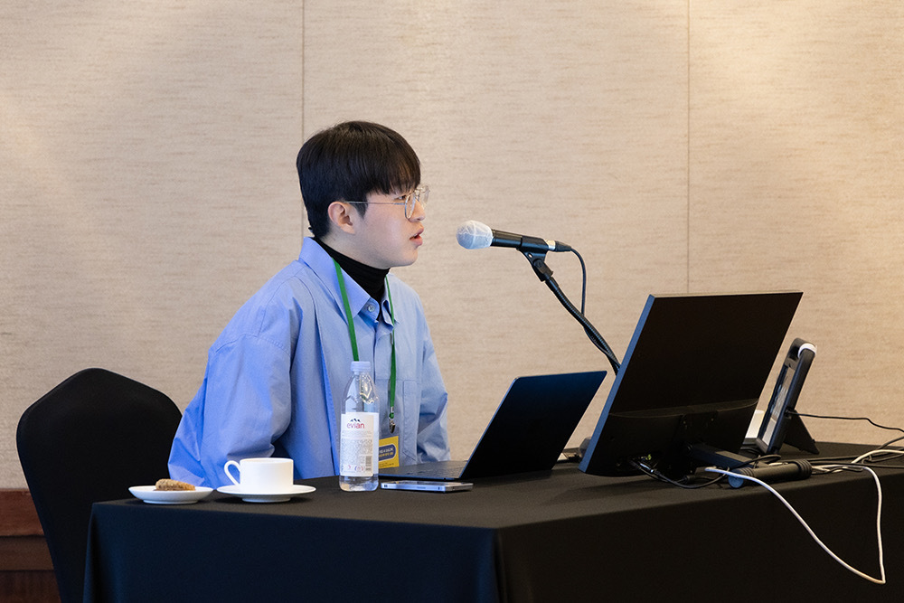

Hyun Do Jung
정현도
Building trustworthy AI for computational pathology
I am a Ph.D. student in Artificial Intelligence at Yonsei University, advised by Prof. Hwiyoung Kim. I study how to make computational pathology models not only accurate but also interpretable and robust — especially when labeled data is limited or the data distribution shifts across institutions.
Specifically, I work on multiple instance learning (MIL), self-supervised pre-training, and concept-based reasoning for whole slide image (WSI) analysis. Most of my recent work asks: given a gigapixel pathology slide, can a model point to which regions drove its prediction, and can we trust those explanations in real clinical settings?
I am currently looking for research internship opportunities in industry. If my work resonates with yours, I would be glad to connect.
Publications
Selected Papers
-
FOCI: Finding Optimal Contextual Instances in Computational Pathology
Submitted to ECCV 2026
-
CASA: Concept-Attention Semantic Alignment Framework for Generalizable Multiple Instance Learning
Submitted to MICCAI 2026* Equal contribution
-
ReaMIL: Reasoning- and Evidence-Aware Multiple Instance Learning for Whole-Slide Histopathology
WACV 2026 Workshop ★ Oral Presentation
-
Comparing Adaptation Strategies Across Pathology Foundation Models: Model- and Data-Dependent Performance on Cross-Domain Breast Cancer Cohorts
Under Review at Medical Image Analysis* Equal contribution
-
A Feasibility Study: Assessing the Use of a Pre-Trained Detection-Free Model on Cytologic Whole Slide Images for Efficient Prediction of Breast Cancer Recurrence Risk
EMBC 2024 Poster
Clinical Collaborations
-
Multivariable Radiomics Model for Predicting Programmed Death-Ligand 1 Expression After Neoadjuvant Chemoradiotherapy in Esophageal Squamous Cell Carcinoma
Under Review at Cancer Medicine* Equal contribution
-
Deep Learning for Multi-Label Plaque Classification in Intravascular OCT: Ensuring Cross-Site Generalization through External Calibration
Submitted to Artificial Intelligence in Medicine* Equal contribution
Talks & Teaching
Korean Society of Artificial Intelligence in Medicine (대한의료인공지능학회) · Oct 2024
Institute for Innovation in Digital Healthcare 2024 Symposium, Yonsei University Health System · Nov 2024
Awards
Education
-
Yonsei University
-
University of Illinois at Urbana-Champaign (UIUC)
-
University of Southern California (USC)